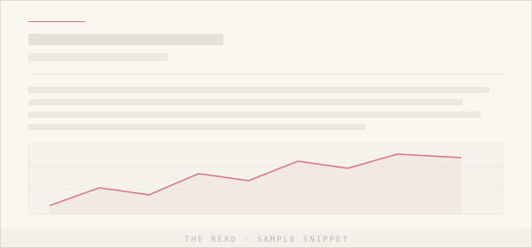
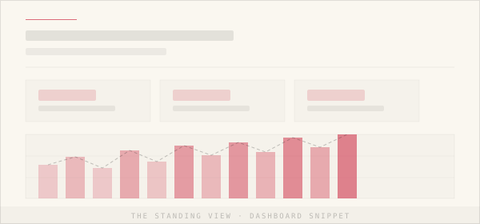
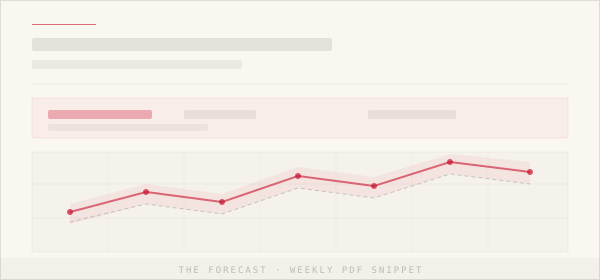

Three products. One way of working.
Every Signalyse engagement starts with a written report. The deeper relationships — the standing dashboard, the weekly forecast — build on the same foundation. Below, what each one looks like in practice.
A single report. Written, not generated.
The Read is a one-off written report on your business. We bring your till data, your weather, your local calendar, and your operating context into one document and produce a piece of analysis — the patterns we found, what they mean, and a small number of concrete moves in priority order. It reads more like a piece of journalism about your business than a deck of charts.
From £300–£600
The deliverable is the document. The document is the product. We don’t hide findings behind dashboards you have to interpret yourself — we write what we found and what we’d do about it.

Quarterly briefs, always-on dashboard, analyst access.
The Standing View is the ongoing relationship. Each quarter brings a new written brief covering what changed against your baseline, the weather context, year-to-date performance, and a rotating deep-dive theme. The dashboard refreshes continuously between briefs. And I’m on email or the phone any time a decision needs a second pair of eyes.
£179/monthA weekly look at the week ahead.
The Forecast is a PDF that lands every Sunday evening, covering the seven days ahead. Expected covers, sales, or footfall — built from your historical pattern, the Met Office forecast, local fixtures, and term dates. The same modelling technique used to forecast UK national electricity demand, applied to your business. Sold only as an add-on to The Standing View, because forecasts need the clean data pipeline Tier 2 establishes.
£179/month
Forecasting is not magic. It’s the past, read carefully, with the weather and the calendar in the right places.
Every engagement starts with a conversation.
Every Signalyse engagement starts with a 20-minute conversation. No data shared at that stage — just an honest read on whether this is right for your business.